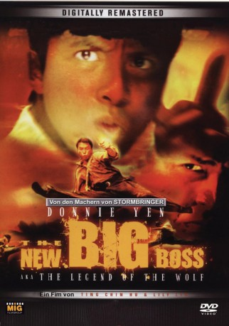

#9854 The New Big Boss
 
 IMDB-Wertung: 6.1 / 10
IMDB-Wertung: 6.1 / 10  Metascore: 0
Metascore: 0 
Der legendäre "Wolf" und die Geschichte die man sich über ihn erzählt: "Wolf", Fung Man Hin verlor einst sein Gedächtnis und zieht nun als "Outlaw" durch das Land. Eines Tages findet er in einem kleinen Dorf einen Freund und Gefährten. Doch wie das Leben so spielt, lebt in genau diesen Dorf auch seine einstige Jugendliebe Wai Yee. Alles scheint sich zum Guten zu wenden. Doch dann wird das Dorf von Banditen, die noch eine Rechnung zu begleichen haben, überfallen. Sie entführen Wai Yee, um so Fung Man Hin in eine Falle zu locken und ihn zu töten. Von da an hetzt der "Wolf" die Meute!
Jahr: 1997
Dauer: 94 Minuten
FSK: 18
Land: Hong-Kong Studio: MIG FilmTonspuren:
Untertitel:
Auflösung: 1080p (1920x1040) Größe: 6717 MB
Genre: Action, Drama
Regisseur: Donnie Yen
Drehbuch: Cub Chin, Tak Wai 'Billy' Lui, Donnie Yen
Soundtrack: Patrick Chi-Yin Kwok, Tommy Wai
Darsteller:
 Donnie Yen als Fung Man-Hin
Donnie Yen als Fung Man-Hin- Carman Lee als Wai-Yee
 Ben Lam als Bandit leader
Ben Lam als Bandit leader- Mandy Chan als Forest fighter
 Wai Cheung Mak als Monkey style fighter
Wai Cheung Mak als Monkey style fighter- Chi Wah Wong als Wai
- Edmond Leung als Ben Chan
- Cub Chin als Bandit leader's boss
- Chin Hung Fan als Bandit
- Ping Han als
- Choi-Chow Hoh als
- Suk Yin Lai als
- Tat Chiu Lee als Fighter with axe
- Tak Wai 'Billy' Lui als Bandit
- Ngan-Ying Poon als Villager
- Jan-To Tam als Fighter with chains
- Kenji Tanigaki als Forest fighter
- Chiu Wing-Hoi als
Datei: X:\FSK18-Eastern\New Big Boss, The (1997, FSK18, 1920x1040).mkv seit 02.11.2018
Festplatte: FSK18
 Es gibt insgesamt 102 Filme in der Gruppe 'FSK18-Eastern'
Es gibt insgesamt 102 Filme in der Gruppe 'FSK18-Eastern'